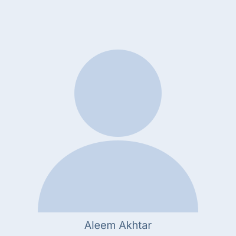
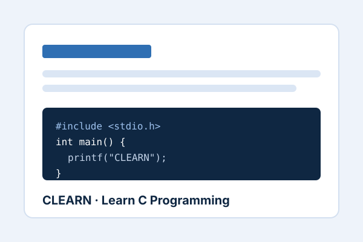

CLEARN, C Programming Learning App
Flutter based learning application designed to support C programming students through structured topic explanations, code examples, click based explanations, Parson puzzles, and classroom based evaluation.
Computer Science Educator · Academic Professional
Computer Science Educator | Programming and ICT Education | Technology Enhanced Learning | Academic Research | Applied Software Development
Computer Science educator and academic professional with 12+ years of experience in college and university teaching, programming instruction, ICT education, student mentoring, academic coordination, and applied software development.

A concise academic profile.
Aleem Akhtar is a Computer Science educator, academic leader, and applied technical professional with more than 12 years of experience across college and university teaching, programming instruction, ICT education, student mentoring, and software development.
His teaching background includes Computer Science, ICT, programming fundamentals, object oriented programming, web engineering, network security, operating systems, research methodology, computational tools, and lab based learning. He has taught intermediate, associate degree, BS CS, and BS IT students, supporting both conceptual learning and practical computing skills.
His academic work includes Computer Science and IT teaching, departmental coordination, student mentoring, examination responsibilities, assessment design, curriculum support, and academic guidance. His applied software development experience helps connect classroom teaching with practical computing, web technologies, mobile applications, and real world software systems.
Research interests include ICT in education, computer assisted learning, teacher assisted learning, programming education, Technology Enhanced Learning, Computer Science education, student assessment, teacher education, and educational informatics.
Subjects and teaching areas delivered across college and university level.
My teaching practice focuses on conceptual clarity, practical computing skills, guided lab work, assessment design, student mentoring, and connecting theoretical Computer Science topics with applied examples.
My teaching approach is based on conceptual clarity, practical engagement, guided problem solving, and continuous feedback. In programming courses, I focus on helping students move beyond syntax memorisation towards code tracing, logic building, debugging, and independent problem solving. I use lab based learning, structured examples, assessment tasks, and educational technology to support student learning.
My research interests focus on how digital tools, structured feedback, and teacher supported learning can improve the way students learn programming and Computer Science.
CLEARN is a Flutter based learning application developed as part of an MS Computer Science thesis to support intermediate level students in learning C programming. The application included topic explanations, code examples, click based code explanations, Parson puzzles, and classroom based evaluation using pre test and post test activities.

Flutter based learning application designed to support C programming students through structured topic explanations, code examples, click based explanations, Parson puzzles, and classroom based evaluation.
Research oriented project connected with course recommendation and educational data.
Work connected with parallel programming education and MPJ Express research output.
Selected applied software development experience includes web applications, mobile applications, dashboards, APIs, CMS based systems, database driven applications, and remote software development projects.
Supervised and supported BS level students in academic projects, programming tasks, coursework, and final year project related activities.
Teaching, academic, research, and applied software development roles.
Higher Education Department, Punjab · Govt. Graduate College, G.T. Road, Jhelum
April 2018 – Present
Teach Computer Science and ICT courses at college and undergraduate level, with responsibilities across programming instruction, lab based learning, student mentoring, assessment design, curriculum support, and academic coordination.
AutoScale Ventures
November 2024 – Present
Contribute to remote software development projects involving web systems, dashboards, APIs, and maintainable application modules.
Punjab Group of Colleges
July 2022 – March 2023
Taught Computer Science courses to BS IT and BS CS students, with emphasis on programming, web technologies, network security, databases, operating systems, and applied computing.
Upwork
January 2011 – November 2022
Delivered freelance web and mobile development projects for international clients, with experience in application development, responsive interfaces, databases, and technical problem solving.
Punjab Group of Colleges
October 2014 – April 2018
Taught Computer Science and ICT courses to intermediate and undergraduate students, focusing on computing fundamentals, programming concepts, E Commerce, lab based learning, and examination preparation.
School of Electrical Engineering and Computer Science, NUST
December 2013 – September 2014
Worked on an ICT R&D funded High Performance Computing research project at SEECS, NUST, contributing to MPJ Express, parallel Java programming tools, debugging, profiling, documentation, and performance evaluation.
Virtual University of Pakistan
October 2019 – March 2025
Virtual University of Pakistan
March 2014 – November 2015
National University of Sciences and Technology, NUST
September 2009 – June 2013
Selected research outputs in computing education and related areas.